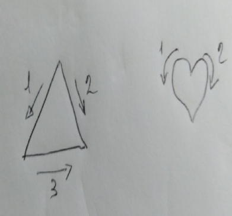
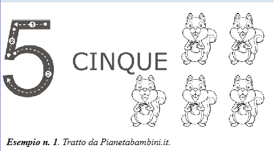
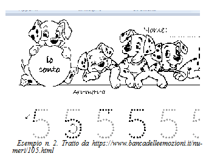
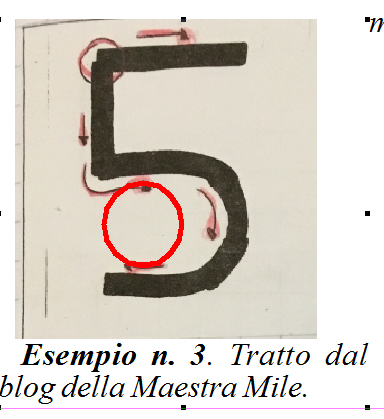
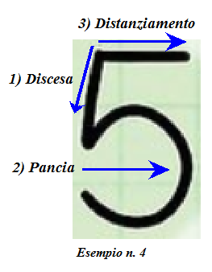
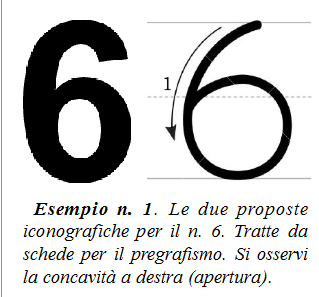
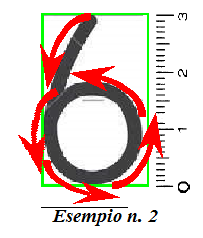
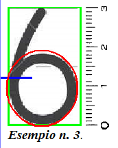
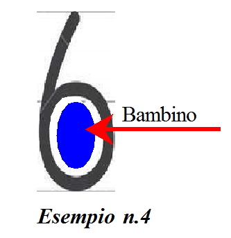

Il racconto dei numeri (II parte)
==

Conviene riprendere le fila: ogni iconografia letta da una collettività può essere considerata lettera ed in quanto tale racconta, secondo la propria specifica natura, la storia del popolo che l’ha codificata, considerata nel qui ed ora, e dello scrivente a partire da quando costui era un cucciolo e da quando mamma e papà si prendevano cura di lui.Naturalmente tutto ciò è provato su base di ricerca e di sperimentazioni. Ad esempio, su iniziativa della mia associazione (AIDAS-DGS), presto verrà formalizzato un test sulle frecce di direzione e sul triangolo (vedi ad esempio, la Figura che segue, notare anche che in questo caso abbiamo voluto anche sperimentare la “lettera” “cuore simbolo dell’amore”- Per le frecce di direzione si intendono le frecce che indicano l’ordine del tracciamento dei singoli cateti. Nel caso concreto, tali frecce raccontano che papà non dialogava, che mamma e papà litigavano ed erano in disaccordo sulla proposto educativa. Il cuore invece racconta che lo scrivente ha subito più abbandoni di tipo affettivo ed amoroso
.
Tali studi sono importanti in quanto si è scoperto che l’attenzione alla corretta iconografia di una qualsiasi lettera, ovviamente evitando la “pedanteria” calligrafica, è educativa e formativa.
Ribadisco un concetto già noto ai lettori di questi miei contributi: la correzione o l’auto correzione dell’iconografia di una lettera di qualsiasi tipo palesemente scorretta è educazione e prevenzione, se effettuata con il sorriso sulle labbra.
In ambito educativo, infatti, la corretta iconografia dei numeri assume un fortissimo rilievo educativo., anche se sarebbe un errore esagerare. Anzi, la ricerca della esattezza calligrafica è nel nostro campo sempre un errore da evitare.
Riprendiamo la trattazione (molto sintetizzata) dei numeri, partendo dal numero 5, precisando che per rigo del cammino si intende ciò che altri definiscono rigo di base.
Per semplicità, a seguire, descriverò il modo in cui il bambino percepisce le iconografie dei numeri, ma si tenga presente che chiunque è stato bambino e che tale bambino è ancora in lui (ciascuno quando scrive, nelle iconografie letterali, subisce una regressione allo stadio infantile, a sua insaputa).
Si tenga conto del fatto che quando si parla di grafica simbolizzata, come nel presente caso, allora non si sta esprimendo alcuna valutazione sullo scrivente, ma si sta raccontando la sua storia condizionante.
==
Numero 5
Le proposte iconografiche della didattica sono principalmente due.

Una proposta, vuole che l’avvio del numero sia allocato nel limite superiore della fascia grafica interessata e che abbia un andamento da destra a sinistra (esempio n. 1).Un’altra proposta vuole che l’avvio sia posizionato nella discesa a sinistra; in questo modo, lo sbarramento orizzontale è eseguito per ultimo e da sinistra a destra (esempi n. 2 e n. 3).
E’ da preferire la seconda proposta che, per quanto è stato possibile osservare dai quaderni dei bambini è largamente adottata.
L’altra differenza che si evidenzia nelle proposte interessa la tipologia della discesa, in un caso la si vuole perpendicolare al bordo inferiore della fascia grafica (esempio 3), un’altra proposta, invece, la vuole diagonale e lievemente inclinata verso sinistra (esempio n. 2): poiché è coinvolto un tratto molto breve, le due proposte iconografiche potrebbero essere accettate entrambe, ma è preferibile la seconda e se ne vedrà la ragione.

Per il resto, per i bambini l’iconografia del “5” non è di difficile esecuzione: da considerare che la parte inferiore di questo numero è analoga a quella del “3”.

CostitutiviIl “5” ha i seguenti costitutivi strutturali:
1) Avvio in alto, con discesa diagonale (esempio n. 2) o verticale (esempio n.3), ma è preferibile la prima discesa, perché facilita l’esecuzione del costitutivo n. 2;
2) Pancia;
3) Distanziamento orizzontale.
I tre costitutivi andrebbero eseguiti esattamente nell’ordine precisato (vedi anche la prossima figura).

Si insiste sull’importanza dei seguenti aspetti iconografici:
a) come nelle pance del “3”, la pancia del “5” dovrebbe essere tumida ed assimilabile a circonferenza incompleta sulla sinistra, senza la pedanteria della precisione, ovviamente. Nel caso delle pance stentate, anguste ed angolose, si può sospettare che il bambino abbia temuto di non essere voluto da mamma (il dato deve essere ribadito dal numero “3”), ma non sono esclusi i casi nel quale il bambino racconta operazioni e/o malesseri che lo hanno coinvolto nella pancia;
b) Il distanziamento dovrebbe essere rettilineo e accostato (ossia non distaccato) alla discesa, altrimenti il bambino tende ad avvertire di essere trascurato dalla propria mamma;
c) Il distanziamento, infine, dovrebbe essere eseguito per ultimo, perché altrimenti il bambino potrebbe temere di essere abbandonato dalla propria mamma (lo si è provato, non è una supposizione. Ad esempio, questo tipo di cinque lo si potrebbe riscontrare in coloro che hanno subito oltre misura un ricovero ospedaliero della madre anche per fatti non gravi, magari solo per partorire un fratellino dello scrivente).
Racconto
Come si è intuito, questo numero descrive gli oneri di mamma (da questo punto di vista ha un logico complemento nel “3), la quale:
deve volere il suo bambino (pancia), depositarlo sul rigo del suolo (discesa), ovvero presentarlo al mondo ed insegnargli il cammino (la lettera di mamma che insegna il cammino al proprio cucciolo è la “i” corsiva minuscola), e ha l’onere anche di non perderlo mai di vista per tutto il tempo che le resta (il distanziamento superiore e parallelo al rigo del suolo, ovvero al rigo cammino che eseguirà il frutto del suo ventre).
==
Numero 6
Si ricorda che il numero “ordina ai generi” compiti e funzioni che costoro hanno l’onere di svolgere in funzione della vita. Questo numero, insieme al numero “1”, si rivolge principalmente al genere maschile, ossia ad alcuni compiti specifici che il modello assegna a papà. Il numero, infatti, è concavo verso la destra, ossia verso il rigo del cammino, il futuro e così via: è papà che avrebbe l’onere di indicare la via e di sostenere e di incoraggiare

Nel caso del “6” le proposte dei sussidi didattici per la prescrittura sono concordi, tranne che per la tipologia dell’avvio reale: sono documentate nell’esempio n. 1. In tutti i quaderni dei bambini osservati è sempre adottata la seconda tipologia, che d’altronde è nettamente da preferire.Costitutivi
Il “6” si esegue con un unico movimento. I costitutivi sono:
Avvio reale. E’ situato nel limite superiore destro della fascia grafica interessata, all’incirca a metà della stessa (esempio n. 2);
Discesa. Diagonale e concava a destra. A partire da circa metà della fascia si tramuta in un arco (arco della destra e concavo della destra);

3) Concavo dell’alto. Posizionato alla base ed assimilabile ad arco;
4) Risalita sino a circa metà della fascia. Si tratta di un concavo della sinistra, assimilabile ad arco;
5) Ritorno a sinistra. Si tratta di un concavo del basso, assimilabile ad arco;
6) Arresto del ritorno nel punto in cui è tangente della discesa (nell’esempio n. 3 è indicato con il segmento blu).

Per conseguenza, nella parte inferiore del “6”, stando il modello che abbiamo descritto, si produce un ovale (derivato) chiuso, quasi assimilabile a circonferenza. L’ovale dovrebbe essere curvilineo ed ampio, ma senza esagerare, per favorire la sensazione dell’accoglienza. L’esagerazione, invece, che rende la conformazione tumida è da considerare negativa (implica che si è patito una carenza affettiva).L’esempio n. 3 ha un’ampiezza eccessiva, invece un ovale armonico per il n.6 dovrebbe possedere una leggera prevalenza della dimensione allungata (più lungo che largo), come nell’esempio n. 4, anche se tuttavia sarebbe da preferire che l’ovale derivato non fosse sigillato come in figura, tranne che nella prima infanzia.

Racconto – esempi
Il numero 6. Dispone che la figura padre protegga e promuova il cammino del proprio bimbo. E’ un numero importante, dunque, che inciderà sul senso della sicurezza soggettiva, anche se non ne va esagerata la portata.
Nell’esempion.5, si hanno queste indicazioni, per i numeri “6” in:
a), la conformazione, che appartiene ad un bimbo di sette anni, può essere considerata positivamente, in quanto vi si nota un lieve atteggiamento preoccupato (per la chiusura ermetica e per l’accuratezza esecutiva) di non essere all’altezza delle aspettative di papà, che può essere considerata fisiologico, data l’età;
b) Esempio non armonico, perché la conformazione è aperta ed è molto gonfia. Il bambino avverte molto l’assenza di papà (anche in questo caso, non si tratta di esagerare, peraltro può dipendere da situazioni transitorie e contingenti);
c) I numeri appartengono ad un adulto e sono molto disarmonici, in quanto gli ovali derivati sono del tipo fallito (si vedano le frecce blu): lo scrivente si è avvertito rifiutato e non sostenuto nel cammino (e nella meta dello stesso), e di conseguenza lotta ai fini di conseguire una propria strada. E’ disarmonico anche il quattro, ma simili conformazioni si riferiscono a dolorosi problemi sanitari, ma transitori e subiti al livello del bacino.
Guido Angeloni